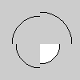

Reference for Processing version 1.2. If you have a previous version, use the reference included with your software. If you see any errors or have suggestions, please let us know. If you prefer a more technical reference, visit the Processing Javadoc.
| Name | arc() |
||||||||||||
|---|---|---|---|---|---|---|---|---|---|---|---|---|---|
| Examples |  arc(50, 55, 50, 50, 0, PI/2); noFill(); arc(50, 55, 60, 60, PI/2, PI); arc(50, 55, 70, 70, PI, TWO_PI-PI/2); arc(50, 55, 80, 80, TWO_PI-PI/2, TWO_PI); |
||||||||||||
| Description | Draws an arc in the display window. Arcs are drawn along the outer edge of an ellipse defined by the x, y, width and height parameters. The origin or the arc's ellipse may be changed with the ellipseMode() function. The start and stop parameters specify the angles at which to draw the arc. | ||||||||||||
| Syntax | arc(x, y, width, height, start, stop) |
||||||||||||
| Parameters |
|
||||||||||||
| Returns | None | ||||||||||||
| Usage | Web & Application | ||||||||||||
| Related | ellipseMode() ellipse() |